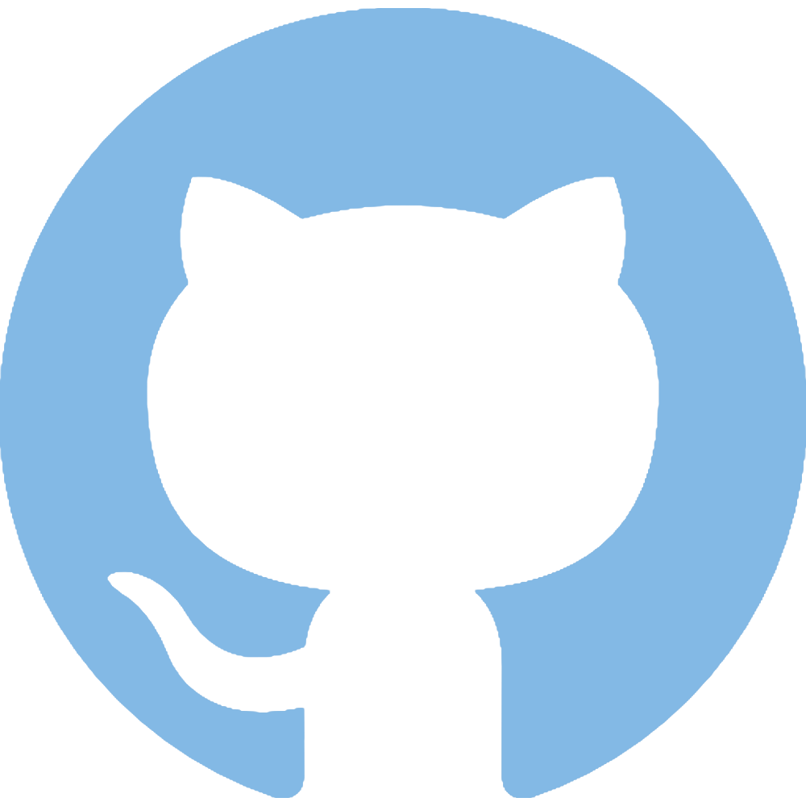

Bryan Smith
Web Developer and Software Engineer
Experience
2018 to Present - Freelance Full Stack Developer.
2017 to Present - Freelance Software Developer.
2012 to Present - Freelance Computer Graphic Design Artist.
2009 to Present - Investigations Case Analyst for the DCSA.
2004 to 2009 - Case Reviewer for USIS.
1997 to 2003 - Military Police for the Ohio Army National Guard.
Education
2019 to 2019 - Information Technology Graduate Program at Purdue University Global.
2014 to 2015 - Computer Graphic Design Program at the Pittsburgh Art Institute.
1997 to 2000 - Bachelors of Science Degree from Youngstown State University.
Skills
JavaScript
Bootstrap
Node.js
jQuery
Express.js
Python
C++
Java
Cinema 4D
3D Modeling
Abode Photoshop
After Effects
Linux
HTML5
CSS
MySQL
SQL
Adobe Illustrator

© 2019 Bryan Smith